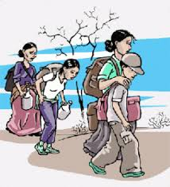

la inmigración es un fenómeno complejo con múltiples dimensiones que afecta tanto a los países de origen como a los de destino, con consecuencias económicas, sociales y culturales. Se requiere una gestión migratoria responsable para maximizar los beneficios y mitigar los desafíos.
Impacto económico:
La inmigración puede impulsar el crecimiento económico al aumentar la oferta de mano de obra, llenar vacantes en sectores con escasez de trabajadores y estimular el consumo y la recaudación de impuestos.
La inmigración puede generar diversidad cultural, enriquecer las comunidades de acogida y fomentar la integración, pero también puede generar tensiones sociales, discriminación y xenofobia.
:Es crucial desarrollar políticas migratorias que promuevan la regularización de la migración, la protección de los derechos de los migrantes y la integración exitosa en las sociedades de acogida.
Importancia de la cooperación internacional:
La migración es un fenómeno global que requiere una respuesta coordinada y colaborativa entre los países de origen, tránsito y destino para abordar los desafíos y aprovechar las oportunidades.
El informe sobre las migraciones en el mundo 2024 destaca que a finales de 2022, la cantidad de personas desplazadas alcanzó la cifra récord de 117 millones.
Impacto de la COVID-19:
Las restricciones de viaje relacionadas con la COVID-19 tuvieron un enorme impacto en la movilidad global, resultando en una inmovilidad forzada sin precedentes.

| ANTERIOR | SIGUIENTE | MENU |